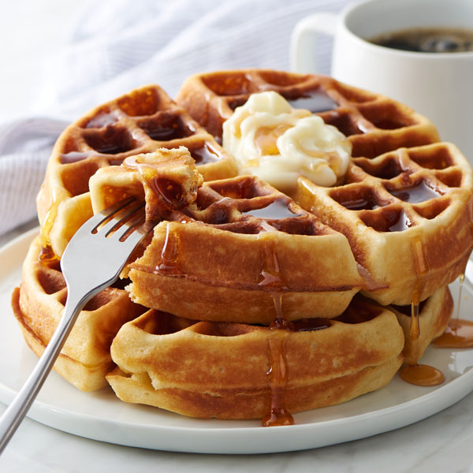

Waffles

About the Recipe
Waffles are a breakfast favorite. They're easy to make for any amount of people and packed with flavor.
The following recipe is sourced from All Recipes, please go to their page to give a view and learn more about the recipe.
Ingredients
- 2 eggs
- 2 cups flour
- 1 3/4 cups milk
- 1/2 cup vegetable oil
- 1 tablespoon white sugar
- 4 teaspoons baking powder
- 1/4 teaspoon salt
- 1/2 teaspoon vanilla extract
- Cooking spray
Directions
- Preheat your waffle iron
- Whisk the eggs in a large bowl.
- Mix in flour, milk, and vegetable oil.
- Mix in sugar.
- Mix in baking powder, salt, and vanilla.
- Spray the preheated waffle iron with cooking spray
- Pour batter and begin making waffles!